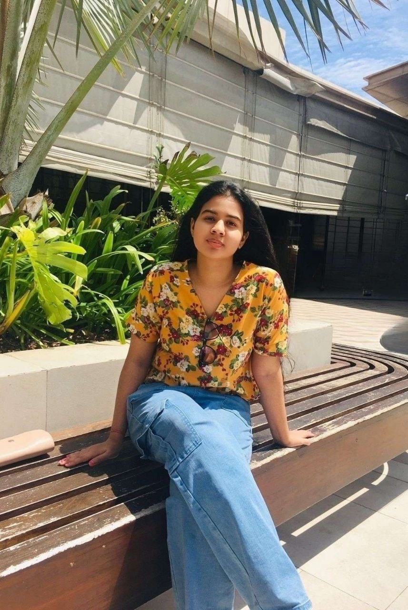

Hey! This is Nethmi Ilangasinghe. I live in gampaha. I'm an undergraduate biotechnology student, currently studying in the SLIIT university Sri Lanka. I would describe myself as a joyful person who always loves to be happy. As I'm surrounded by a bunch of friends all the time, I believe I'm a friendly person too. Other than that, I'm a very goal oriented person.My ambition is to become a doctor and serve people.
